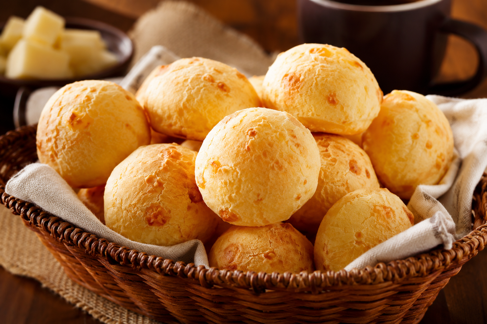
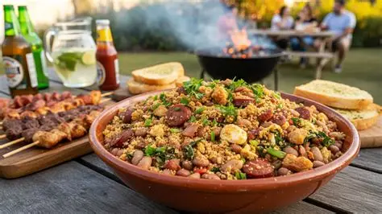
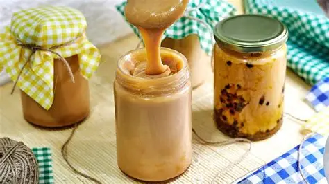

Pão de Queijo Recheado
Uma verdadeira instituição mineira! Encontrado em cafeterias centrais de Muriaé, servido sempre quentinho com queijo artesanal, pernil ou requeijão da roça.
A autêntica culinária da Zona da Mata mineira

Uma verdadeira instituição mineira! Encontrado em cafeterias centrais de Muriaé, servido sempre quentinho com queijo artesanal, pernil ou requeijão da roça.

Prato forte e marcante servido nos principais restaurantes e feiras locais aos domingos, acompanhado de torresmo crocante, couve picada e ovo frito.

Doces de leite cremosos, ambrosias e goiabadas cascão produzidas de forma totalmente artesanal nos distritos rurais vizinhos.
O segredo do sabor marcante da nossa região baseia-se em elementos frescos de produtores locais:
Nota: os produtos vêm direto da agricultura familiar regional.
Confira a média de custos e onde encontrar essas delícias na cidade:
| Prato/Produto | Onde Encontrar | Faixa de Preço Média |
|---|---|---|
| Café da Manhã com Pão de Queijo | Cafeterias do Centro / Padarias | Econômico (R$ 8,00 - R$ 15,00) |
| Almoço Completo (Tropeiro/Mineira) | Restaurantes Tradicionais / Feira Livre | Moderado (R$ 25,00 - R$ 45,00) |
| Compotas e Doces Caseiros (Pote) | Mercado Municipal / Distritos | Variável (R$ 15,00 - R$ 30,00) |